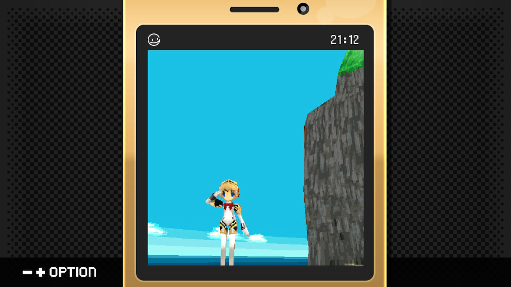
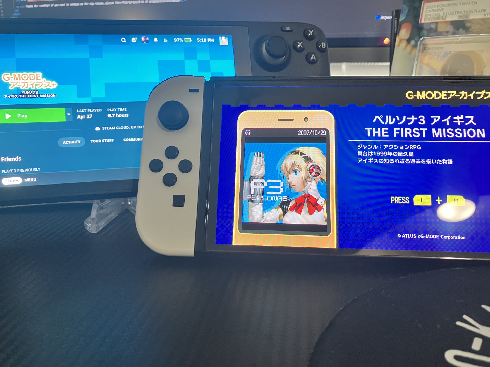

1game1week - Week 23 (6/4/25) - G-MODE Archives+: Aigis The First Mission
Hey all! It's week 23! (6/4 -> 6/11)
I know it seems like I forgot... I didn't! I decided to not post yesterday intentionally because I wanted to talk about the Switch 2.
My preorder was through Walmart. They offered free shipping and launch day delivery before 9am, so I figured that was probably good enough. I was really tempted to go to a midnight release... who knows how many of those the gaming space has left in it?
Didn't end up going for it, though. Day was long, I was tired... my bedtime is 11 these days. What good would it do me to go to a midnight release? Stand in a line, get my machine, drive back, and then crash out of exhaustion? Nah...
It all started... eight minutes before I woke up. At 7, my alarm blared. I checked my phone and there it was: a text from 6:52am saying "your order was delivered!".
Of course... I ran to my door and found the goods.
There was my Switch... and a tote bag with a Coke and Pringles. At first I thought the delivery driver had just messed up and left someone's very strange order at my door. I just brought it inside anyway... sucks to suck, Walmart guy. As it turns out, everyone got Pringles and Coke. I wasn't special after all.
'Blown away' is a bit of an understatement, I think. In theory, it's really obvious. You have a pretty powerful console running something a not-that-powerful console struggled with, so you get a lot of simple brute-force enhancements.
Load times, framerates are the things I saw the most. Tried a few things, but in short, I essentially just thought, "what struggles to run on the Switch?" or "what made my eyes bleed?"
Atelier Ryza was top of that list. It had long loads, framerate stuttered quite a lot, and it was rendered in an incredibly low resolution. It's not too surprising, but I remember struggling to play. On Switch 2, loads are cut drastically, framerate is a solid 30 (probably only due to a cap, it's very likely more than capable than hitting 60)... but textures still looked awful. Not much the Switch 2 can do... high-res textures probably don't exist in this version.
Have you guys tried booting Smash Ultimate? Load times are so fast it had me struggling to keep up.
Scarlet and Violet's insane glow up made my jaw drop. This is an insane comeback story for ScVi. It's not perfect, but it is very dang good.
I ended up buying Breath of the Wild Switch 2 Edition (not an additional backlog entry, it's just an upgrade). I was really disappointed that it required me downloading an update to use the Switch 2 version.
Seeing this game running at 4K60 is insane. I've been having fun just screwing around and learning some fun speedrun tricks like windbomb, whistle sprinting and fall damage cancelling.
Never finished BOTW. Might be a good game to start out my Switch 2 cycle with.
What I'm looking forward the most out of this system has to be performance updates for various titles. MonolithSoft titles in particular. I would LOVE to see Xenoblade 2 at its full potential. It's definitely one of those 'doesn't look perfect' games, but mostly because it was running on a Switch.
This generation will be insane for MonolithSoft. I can just tell.
Anyways!
New games from 5/28 -> 6/3:
Lunar Legend (GBA)
Super Mario RPG (Switch)
Currently, my backlog is at +13 (lower is better, +1 from last week).
And onto 1g1w. Once again, a game is considered "beaten" if I've accomplished the main objective of the game.
GAME: G-MODE Archives+: Aigis The First Mission
PLATFORM: PC (Steam Deck) and Switch
STARTED ON: 4/27
BEATEN ON: 4/28
This game used to be lost media!
It's a decently short Persona 3 prequel game for old flipphones / keitais. It's not good, but that might just be me.
An English patch seems to have popped out from nowhere in my Discord DMs for the Steam version of the game. It was mostly complete. All it really was missing was a little bit of polishing, but it gets the entire premise translated fine.
The gameplay consists of the following: go around and press a button a million times to shoot bad guys. If you kill enough bad guys, you level up. Some bad guys, you don't deal damage to until you level up. Also, every time you press the button, the game becomes a PowerPoint.
That's it. That's the game.
Please behold this riveting gameplay:
Maybe I'm being too harsh... This is a phone game. By the time this released I would've been amazed if Snake was on my mom's Blackberry. This is the prehistoric times from before people would ask you if you had games on your phone.
It's not all bad. The narrative is interesting even if ultimately inconsequential for Persona 3. It's like the end of Revenge of the Sith where Bail Organa has 3PO's memories wiped.
So you ask... did any of this matter? In terms of the narrative of Persona 3, not really. But as its own story, it's interesting enough to keep someone's attention.
There's a few cameos from interesting people in Persona 3, at least.
Not to spoil a game from 2007... but as far as something as Persona 3 would go, it'd be really interesting to have been able to witness "the incident from 10 years" before the game.
Let's be real. I had no expectations in the slightest going into this game. I knew it wasn't gonna be good.
That particular thought manifested itself the first runthrough I did. I ended up being too underleveled to do anything. All enemies I found from that point on were too high level for me to damage. I somehow managed to softlock myself in a phone game.
So I restarted the game, did the same things, and got through just fine after that.
Then I played it again. I thought, 'that playthrough wasn't so bad. I can run it again and have one more backlog point.'
Trust me... if I really didn't care for the game, or thought there was at least a hint of something entertaining behind the carpal tunnel, I wouldn't play it again.
It's one of those games that sucks, so it's somehow fun to play.
Maybe I'm just easily entertained?


Thanks for reading! If you need to contact me for any reason, please feel free to email me at aru@hoshikawa-aru.com.